9th Grade General Knowledge Worksheets
398 General Knowledge resources for 9th Grade, ready to print: Musa, Morte, Mese, Mercante and more. Each resource page shows the grade range, page count and a preview and links straight to the product on TpT.
398 resources

La francophonie – French Reading BUNDLE | French-Speaking World Fiches
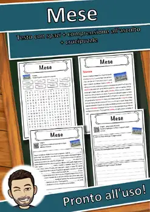
Mese – Italian Reading Comprehension Worksheet (Scheda): Cloze & Listening
Mercante – Italian Reading Comprehension Worksheet (Scheda): Cloze & Listening
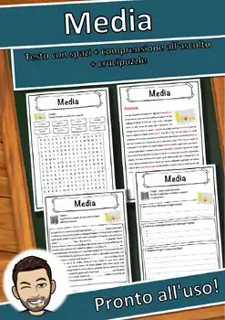
Media – Italian Reading Comprehension Worksheet (Scheda): Cloze & Listening
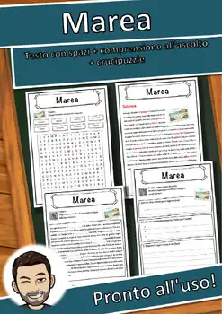
Marea – Italian Reading Comprehension Worksheet (Scheda): Cloze & Listening
Mar Nero – Italian Reading Comprehension Worksheet (Scheda): Cloze & Listening
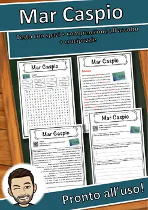
Mar Caspio – Italian Reading Comprehension Worksheet (Scheda): Cloze & Listening
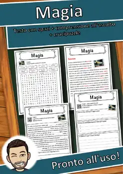
Magia – Italian Reading Comprehension Worksheet (Scheda): Cloze & Listening
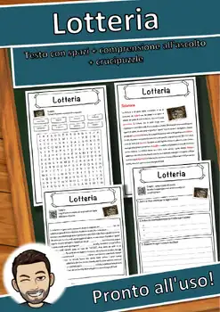
Lotteria – Italian Reading Comprehension Worksheet (Scheda): Cloze & Listening
Lot – Italian Reading Comprehension Worksheet (Scheda): Cloze & Listening
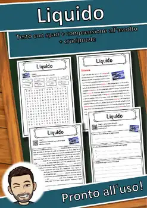
Liquido – Italian Reading Comprehension Worksheet (Scheda): Cloze & Listening

Lichene – Italian Reading Comprehension Worksheet (Scheda): Cloze & Listening

Libro – Italian Reading Comprehension Worksheet (Scheda): Cloze & Listening

Libertà – Italian Reading Comprehension Worksheet (Scheda): Cloze & Listening

Lettera – Italian Reading Comprehension Worksheet (Scheda): Cloze & Listening

Legno – Italian Reading Comprehension Worksheet (Scheda): Cloze & Listening

Le mille e una notte – Italian Reading: Cloze, Listening & Word Search

Lavoro minorile – Italian Reading: Cloze, Listening & Word Search

Lavorazione della ceramica – Italian Reading: Cloze, Listening & Word Search

Laus – Italian Reading: Cloze Text, Listening Task & Word Search (Scheda)

Latifoglie – Italian Reading: Cloze Text, Listening Task & Word Search (Scheda)

Laser – Italian Reading: Cloze Text, Listening Task & Word Search (Scheda)

Lasagne al forno – Italian Reading: Cloze, Listening & Word Search

Lampada a incandescenza – Italian Reading: Cloze, Listening & Word Search

LGBT – Italian Reading: Cloze Text, Listening Task & Word Search (Scheda)

Krebs – Italian Reading: Cloze Text, Listening Task & Word Search (Scheda)
Konrad Adenauer – Italian Reading: Cloze, Listening & Word Search
Kleidung – Italian Reading: Cloze Text, Listening Task & Word Search (Scheda)
Klaus Störtebeker – Italian Reading: Cloze, Listening & Word Search
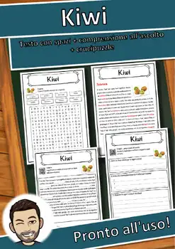
Kiwi – Italian Reading: Cloze Text, Listening Task & Word Search (Scheda)
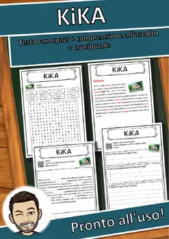
KiKA – Italian Reading: Cloze Text, Listening Task & Word Search (Scheda)
Ketchup – Italian Reading: Cloze Text, Listening Task & Word Search (Scheda)
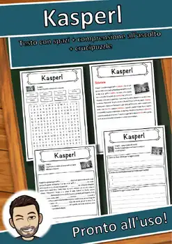
Kasperl – Italian Reading: Cloze Text, Listening Task & Word Search (Scheda)
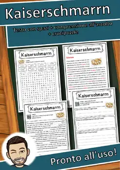
Kaiserschmarrn – Italian Reading: Cloze, Listening & Word Search
Jurij Gagarin – Italian Reading: Cloze, Listening & Word Search
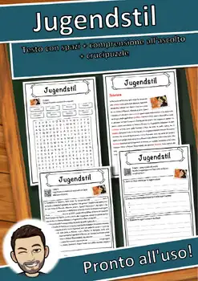
Jugendstil – Italian Reading: Cloze Text, Listening Task & Word Search (Scheda)
Johann Wolfgang von Goethe – Italian Reading: Cloze, Listening & Word Search
Jeans – Italian Reading: Cloze Text, Listening Task & Word Search (Scheda)
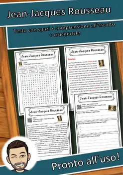
Jean-Jacques Rousseau – Italian Reading: Cloze, Listening & Word Search
James Watt – Italian Reading: Cloze Text, Listening Task & Word Search (Scheda)
Islam – Italian Reading: Cloze Text, Listening Task & Word Search (Scheda)
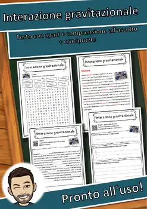
Interazione gravitazionale – Italian Reading: Cloze, Listening & Word Search
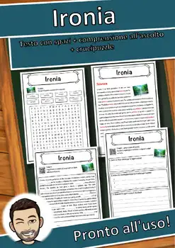
Ironia – Italian Reading: Cloze Text, Listening Task & Word Search (Scheda)
Irochesi – Italian Reading: Cloze Text, Listening Task & Word Search (Scheda)
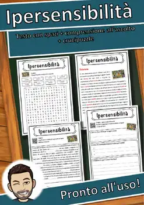
Ipersensibilità – Italian Reading: Cloze, Listening & Word Search
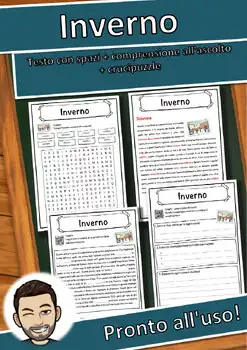
Inverno – Italian Reading: Cloze Text, Listening Task & Word Search (Scheda)
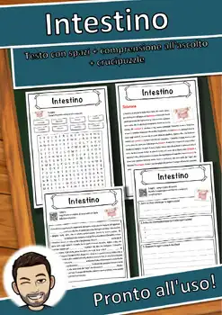
Intestino – Italian Reading: Cloze Text, Listening Task & Word Search (Scheda)
Insubordinazione – Italian Reading: Cloze, Listening & Word Search
No resources found – try a different search term or filter.